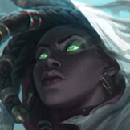

核心裝備
 磁性雷射槍
磁性雷射槍 致死宣告
致死宣告 巨蛇鋒牙
巨蛇鋒牙 黑色切割者
黑色切割者 守護天使
守護天使

以下為本站 7.2d 校正後的標準配置；實戰仍需依敵方陣容調整。


技能優先：Q > W > E
附近單位陣亡時有機會生成黯霧靈魂；攻擊靈魂可永久提高物攻、攻擊距離與暴擊率。對同一英雄完成兩次攻擊也能抽取黯霧並造成目前生命傷害。
向指定單位射出穿透光束，傷害敵人並治療自己與友軍；普攻可縮短冷卻，且技能能作用於士兵、守衛與防禦塔來延伸射程。
射出黑霧命中第一個敵人並造成傷害，短暫延遲後禁錮目標與周圍敵人；若命中單位死亡則會立即觸發。
化為黯霧並提高跑速，附近友軍進入後會獲得偽裝與幽魂外觀，適合轉線、撤退與掩護隊友進場。
向全圖發射光影波，為所有友方英雄提供護盾，並對中央路徑上的敵人造成物理傷害與附加黯霧。
第一次普攻 → 1技傷害兼治療 → 被動抽取黯霧 → 視情況補普攻
普攻接一技可快速完成對同一英雄的兩次命中並抽魂。一技同時回復自身血量，完成換血後立即拉回射程外。
2技命中前排單位 → 普攻壓低血量 → 單位死亡立即禁錮 → 1技穿透輸出 → 持續追擊
可把二技射向殘血士兵或召喚物；目標死亡時禁錮會立即展開，讓敵方更難反應，再用一技穿透兵線接續輸出。
4技全圖護盾傷害 → 3技掩護進場 → 2技限制走位 → 1技治療與輸出 → 遠距普攻
先看隊友血量與敵方位置預判大絕，護盾要在爆發落下前到達。抵達戰場後以三技掩護隊友，再用二技和一技維持控制與續戰。
利用普攻接刺骨幽闇完成兩次命中抽取黯霧，同時保持補刀與血量。靈魂生成時先確認敵方控制與打野位置，不必為了一層走進危險區；一技可穿過士兵或隊友遠距消耗，二技則留給對手走位受限或隊友準備接控時使用。
磁性雷射槍與致死宣告成形後，跟隊伍移動收集兵線、野區與戰鬥產生的靈魂。物件戰站在前排後方，以一技同時治療隊友與消耗敵人，二技命中後協助集火；持續觀察小地圖，用黎明之影提前替遠端戰鬥提供護盾或補傷害。
靈魂累積帶來長射程後，保持在敵方突進範圍外攻擊最近目標，不需要為點後排而往前。三技可掩護隊伍轉線或重新進場，但靠近敵人仍會被揭露；大絕應在隊友即將承受爆發前施放，並讓中央傷害路徑穿過主要目標。
對局名單是本站依英雄機制與目前配置整理的參考，不等同固定勝率。
先照標準出裝與符文走；只有敵方陣容真的形成威脅時，再替換必要格子。
觸發：敵方至少有 2 名高生命／高護甲前排，而且團戰多數時間必須先處理前排。
把後期彈性位換成更有效的百分比穿透、削甲或高生命目標傷害。
斷切能直接提高對高生命敵人的普攻傷害。
觸發：敵方有多名能直接貼到後排的刺客／爆發英雄，或你常在開始輸出前就被秒。
魔提斯深淵提供魔防與低血量魔法護盾，比單純增加輸出更能保住進場或持續輸出。
觸發：敵方有多個硬控，而且控制鏈會讓你直接失去輸出時間。
先購買水銀飾帶取得主動解控，之後再合成水星彎刀；水銀飾帶是合成組件，不是另一件要與水星彎刀互換的成裝。
犧牲部分輸出型傳奇符文，換取韌性與緩速抗性。
提醒：水星彎刀的路線是先購買水銀飾帶，再完成水星彎刀；水銀飾帶不是另一件終局成裝。
觸發：敵方有多名高治療／高吸血英雄，或核心前排能在團戰中大量回血。
標準出裝已經有重創，符文也不必為治療量另外更換。
觸發：敵方有多個大量護盾來源，而且己方沒有其他更適合負責反護盾的英雄。
目前沒有值得為反護盾破壞標準輸出核心的替換，優先讓更適合的隊友處理。
提醒：反護盾裝通常是彈性位，不要只因敵方有一個小護盾就固定購買。
7.2a 飛龍路第四批正式攻略：技能名稱與核心機制依 Riot Games 台灣《激鬥峽谷》姍娜英雄頁校正，並納入官方 7.2a 被動目前生命傷害與黎明之影護盾調整；出裝、符文與技能順序交叉參考 WildRiftFire Patch 7.2a 後整合。Tier 維持本站既有飛龍路評級。｜v68：套用吉茵珂絲 v64 固定母版。｜v76 第二階段：新增 3 位合適輔助與搭配理由，並完成攻略內容欄位驗收。
本站於 2026-08-27 依 Patch 7.2d 重新檢查此配置。 Tier、出裝、符文與對局屬於 Wild Rift Guide 的整理與分析，不是 Riot Games 官方推薦；版本改動後會再依官方公告與實戰資料校正。